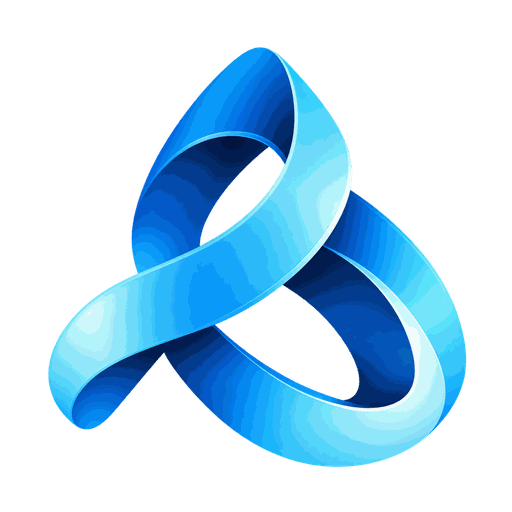

الاجتماعات
تُخصص هذه المساحة لتنظيم التواصل بين أعضاء الفريق والمشرف، وتوثيق المناقشات والقرارات التي تسهم في متابعة سير المشروع.
الاجتماعات
مواعيد اجتماعات مشاريعك مع الفريق والمشرف، والانضمام إليها في وقتها.
لا توجد اجتماعات في هذا القسم حتى الآن
تُعرض الاجتماعات في هذا القسم عند جدولتها أو عند استلام دعوة جديدة.
اسم الاجتماعالمشروعالتاريخالوقتالإجراء
ملاحظاتي على الاجتماع
إنشاء اجتماع
يُحدَّد عنوان الاجتماع والمدعوون والهدف والتاريخ والوقت.